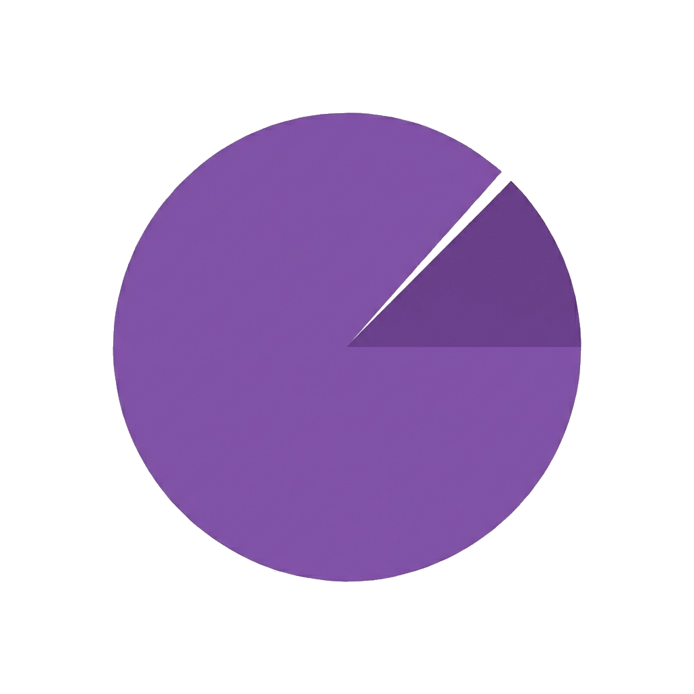

DIFFsense
契約書の差分確認や修正案作成を支援するAI契約レビューSaaS。
- 契約書の差分自動比較
- AIによる修正案の提示
- 条文の要約・リスク検出
- 電子署名・履歴管理
初期モデル構築：約2週間
WORKS
DIFFsense、MERKI、Snackdrop、XDraftなど、自社サービスをAI活用開発で短期間にリリース。平均約2週間で検証版を公開し、実運用から得た知見をお客様の開発にも反映しています。
契約書の差分確認や修正案作成を支援するAI契約レビューSaaS。

法律・制度の期限管理を自動化する通知サービス。
アイデア整理・構造化を効率化するデジタルツール。
今日の一歩を軽やかに決める、シンプルなガチャ体験ミニプロダクト。
LP、管理画面、データ構造化システム、決済連携などの実装知見を蓄積。
※ 開発期間は要件やスコープにより変動します。
契約書の差分確認や修正案作成を支援するAI契約レビューSaaS。
契約書レビューは専門知識が必要で、弁護士や法務担当者の工数が大きく、レスポンスも遅くなりがちでした。AIで差分確認と修正案作成を自動化し、スピードと精度を両立するサービスとして開発しました。
初期モデル構築：約2週間
継続的に改善・機能追加を実施
法律・制度の期限管理を自動化する通知サービス。
法改正や制度変更の期限管理は見落としリスクが大きく、担当者の手作業に依存しがちでした。期限情報の収集から通知までを自動化し、対応漏れを防ぐサービスとして開発しました。
通知システム構築：約2週間
継続的に改善・機能追加を実施
アイデア整理・構造化を効率化するデジタルツール。
アイデアを形にする前の整理・構造化に時間がかかり、着想が流れてしまうことが多くありました。思考の整理からドラフト作成までを一気に支援するツールとして開発しました。
MVP開発：約1週間
継続的に改善・機能追加を実施
今日の一歩を軽やかに決める、シンプルなガチャ体験ミニプロダクト。
「今日なにをするか」という小さな意思決定にも、意外とエネルギーを使います。考えすぎずに一歩を踏み出せる、軽やかなガチャ体験として開発しました。
爆速リリース：約3日間
反応を見ながら軽量に改善
LP、管理画面、データ構造化システム、決済連携などの実装知見を蓄積。
自社サービスの開発・運用を通じて、LP、管理画面、データ構造化、決済導線など、プロダクトを構成するパーツごとの実装知見を蓄積しています。お客様の開発でも同じ品質とスピードで提供します。
3日〜1週間（パーツ単位）
要件に応じて柔軟に対応